Flourprint — maquettes révisées v2
Style conservé, informations et gestes restaurés. Quatre écrans en français à 360 × 800 px : liste, recette, modification et préparation. Le style est validé; cette organisation révisée attend la validation du propriétaire avant l’implémentation.
Base comparée : dev c36f6bc, v0.2.0. Heure de démonstration : 9 h. Les saisies et actions illustrent le fonctionnement sans enregistrer de données réelles ni exécuter de modèle prédictif. Les conversions des ratios seront fournies par le domaine. Le cas au lait illustre la consultation sans ingrédient eau; l’éditeur présente la recette de référence. Le brouillon Baguette est une entrée illustrative.
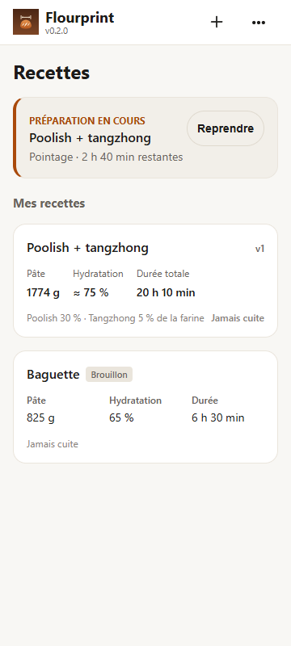
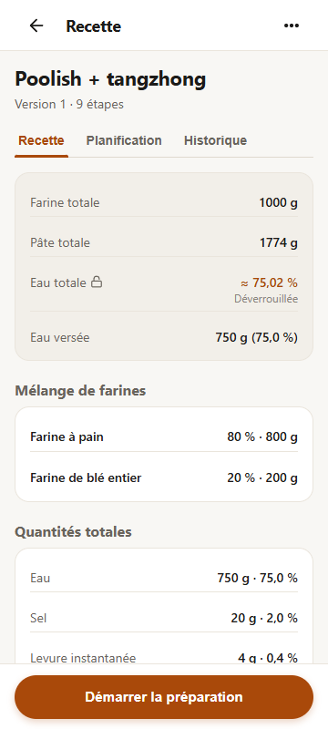
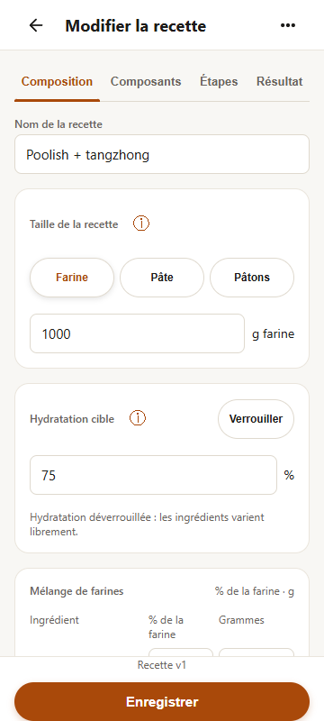
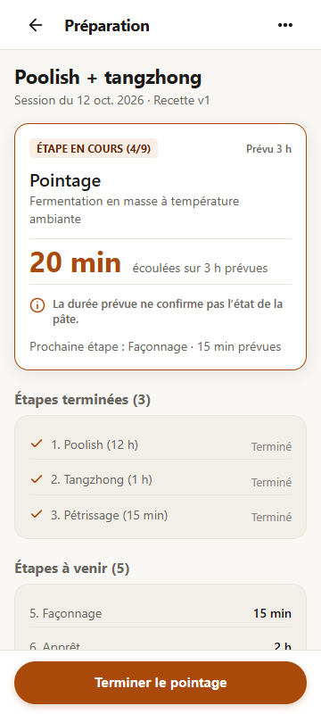
Explorer l’éditeur et le journal
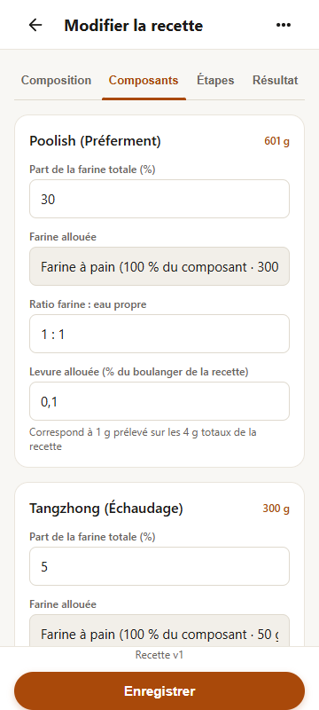
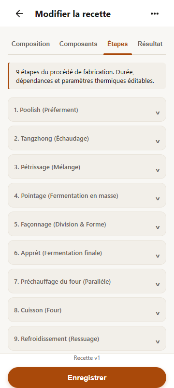
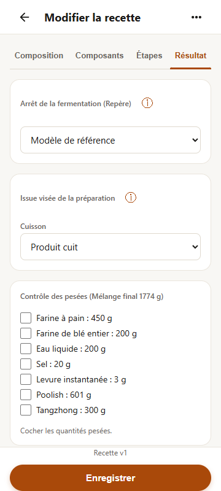
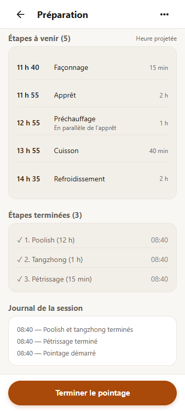
Comparer avec le dev actuel
Liste
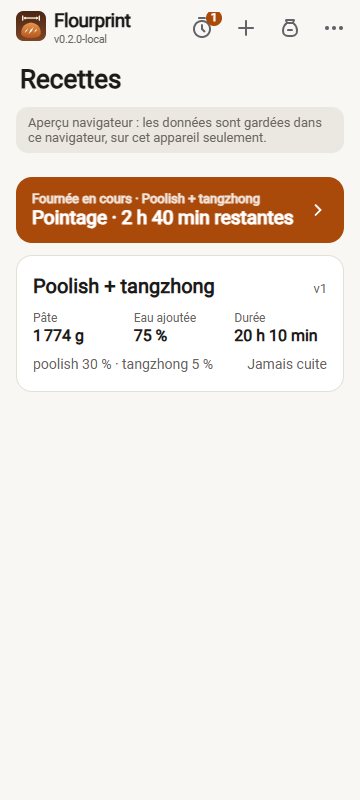
Recette
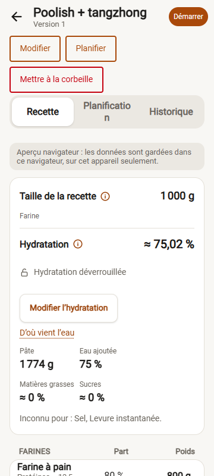
Modification
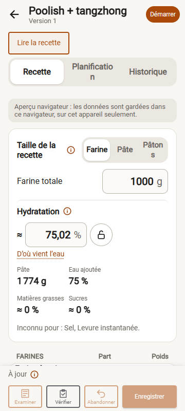
Préparation
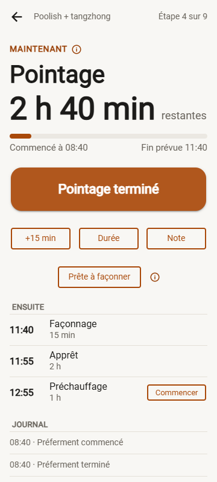
AMOLED : la comparaison utilise le sombre actuel, car le dev comparé n’a pas de sélecteur AMOLED. La validation de cette maquette ne vaut pas validation native Android. Les deux prolongations de +15 min et les choix de durée illustrent des instantanés fixes; le moteur réel sera branché pendant l’implémentation.